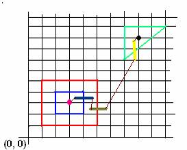

|
Problem D |
Predator II |
|
Time limit: 2 seconds |
|
Oh No!!! The predator has entered the room again. But this time it is a different kind of room.
The room is a square of size 10000 X 10000. There are several compartments of different shapes and sizes, situated strictly inside the room. The walls of different compartments don’t overlap, but a compartment can be completely inside that of another.
This time the predator has learned to hop over walls, but it can jump over at most one wall at a time. Given the starting and ending coordinates of the predator, and the positions of the compartments, your job is to find out the minimum number of hops required for the predator to reach his destination from the start.
The starting and ending positions are never on the boundary of any compartment.
Input
The first line of input is an integer (T ≤ 20), that indicates the number of test cases. Each case starts with an integer
(n ≤ 20), that determines the number of compartments in the room. The next n lines give the positions of the compartments. The compartments are simple polygons. The description of each compartment starts with an integers (S ≤ 10), that gives the number of sides of the polygon, followed by S pairs of x, y coordinates in order. Next there is an integer Q that determines the number of queries for this scenario. Each of the next Q lines contains 4 integers x1, y1, x2, y2. (x1, y1) is the starting position and (x2, y2) is the ending position.
The lower left and upper right coordinates of the room are (0, 0) and (10000, 10000) respectively.
Output
For each case, output the case number. Then for each query, output the minimum number of hops required.
|
Sample Input |
Output for Sample Input |
|
2 3 4 1 1 5 1 5
5 1 5 4 2 2 4 2 4
4 2 4 3 7 7 10 10
7 10 1 3 3 8 9 1 4 1 1 10 1
10 10 1 10 2 2 2 100 100 100 100 2 2 |
Case 1: 3 Case 2: 1 1 |
ProblemSetter: Sohel Hafiz
Next Generation Contest 2
Illustration
The following diagram depicts the first sample input.

Pink spot à starting position
Black spot à target
The three hops are shown by three broad line segments.